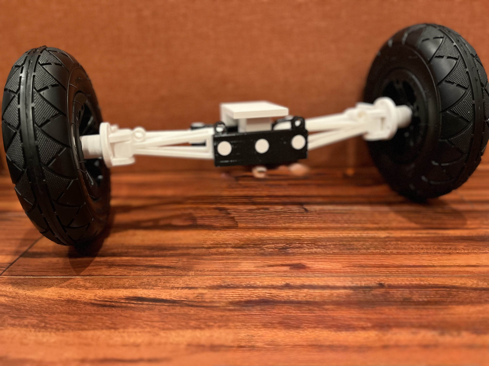
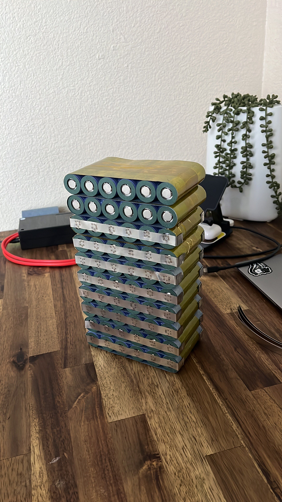
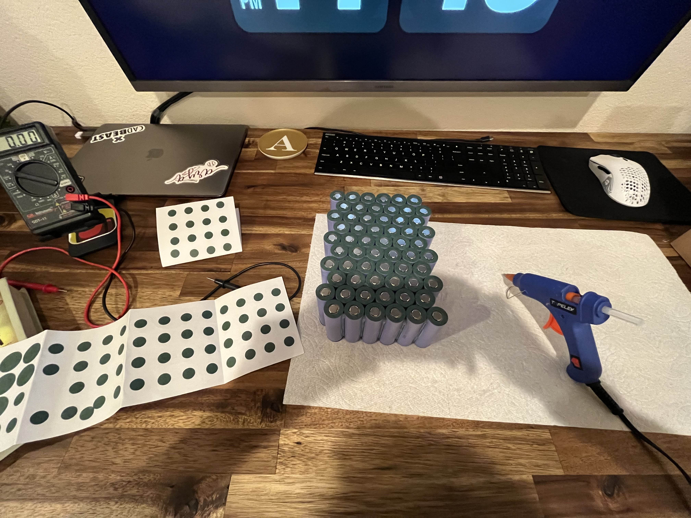
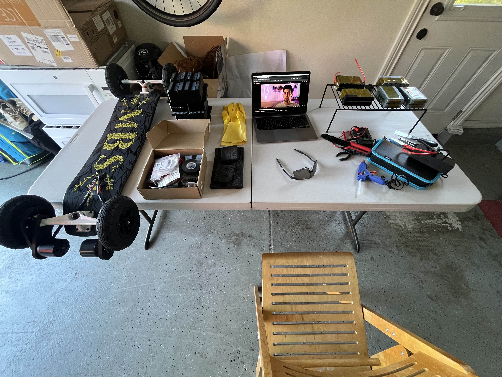

All-Terrain Electric Mountainboard
High-torque, all-wheel-drive electric skateboard designed to merge skateboarding, hiking, and off-road exploration.
Overview & Motivation
As someone who loves skateboarding, hiking, and mountain biking, I wanted to build a platform that combined the agility and freedom of a skateboard with the terrain capability of off-road travel.
Traditional electric skateboards perform well on pavement but struggle on dirt, gravel, roots, and uneven terrain. This project focuses on solving those limitations through mechanical design, drivetrain architecture, and control systems.
Key Design Challenges
- Maintaining traction on loose and uneven terrain
- Traversing large obstacles safely
- Balancing agility with high-speed stability
- Delivering sustained torque without overheating
- Achieving long-range battery life
- Ensuring rider safety during aggressive off-road riding
Mechanical Design & Suspension
A custom suspension system was designed to smooth impacts from rocks, roots, and uneven surfaces. This allows the wheels to maintain ground contact, improving both ride comfort and traction.
Large off-road tires with aggressive treads improve obstacle clearance and grip. Wider trucks provide stability, while intentionally looser tuning preserves a sharp turning radius for technical riding.
Drivetrain, Motors & Traction Control
The board uses a dual-motor, all-wheel-drive configuration. Each motor is controlled by its own dedicated VESC, allowing independent torque control per wheel.
This setup enables traction control behavior: when excessive slip is detected, power is reduced or cut to maintain stability and efficiency.
Battery System & Range
A high-capacity custom battery pack was designed to deliver approximately 43 miles of range. Cell selection and configuration were optimized for sustained high current draw with minimal voltage sag.
 High-Level System Architecture
The electrical architecture follows a modular, fault-tolerant design optimized for high torque delivery, redundancy, and traction control.
This configuration delivers rear-wheel all-wheel-drive behavior with independent torque control at each wheel, improving traction, stability, and efficiency on loose or uneven terrain.
Rider Safety & Control
To prevent foot slippage during aggressive riding, the board includes removable foot straps. These secure the rider on rough terrain while remaining optional for smoother surfaces.
Performance Specifications
| Drive Configuration | Dual Motor AWD |
| Range | ~43 miles |
| Top Speed | ~30+ mph (terrain dependent) |
| Motors | High-torque brushless motors (2×) |
| Motor Controllers | Independent VESCs |
| Traction Control | Yes (software-based) |
| Tires | Large off-road treaded tires |
| Suspension | Custom shock-based system |
What I’d Improve Next
- Closed-loop traction estimation using IMU + motor current fusion
- Regenerative braking optimization for downhill efficiency
- Waterproofing and sealing for all-weather riding
- Custom enclosure design to reduce weight and improve serviceability
- Onboard telemetry logging for performance analysis